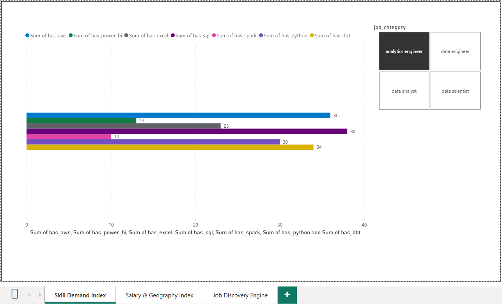
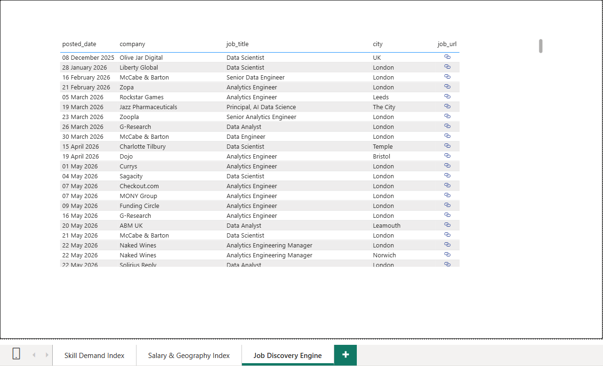

UK Data Job Market Intelligence Platform
A fully automated data platform ingesting 200+ live UK job listings a day via the Adzuna API, orchestrated with Prefect, transformed with dbt, and reported through Power BI.
Executive Summary
Understanding where UK data jobs actually are — and what they pay and require — means pulling and refreshing live listings, not relying on a one-off scrape. This project builds a daily-refreshed platform: Prefect orchestrates ingestion of 200+ live listings a day from the Adzuna API into Google BigQuery, dbt transforms and text-mines them, and Power BI reports on the result.
Business Problem
Job market data changes daily and lives across many postings with inconsistent text. The goal was a scalable, hands-off pipeline that keeps salary and skill-demand insights current without manual re-running.
Solution Architecture
Adzuna API (live UK job listings)
│
▼
Python + Prefect (scheduling, monitoring, error handling)
│
▼
Google BigQuery (raw landing)
│
▼
dbt (staging → intermediate → marts, skills text-mining)
│
▼
Power BI (salary & hotspot dashboard)
Technology Stack
Python • Prefect • Google BigQuery • dbt • Power BI
Engineering Highlights
- Prefect orchestration handling scheduling, monitoring, error handling and network-delay management for a live external API.
- 3-tier dbt transformation layer (staging → intermediate → marts) with SQL window-function deduplication and validation tests.
- Inline SQL text-mining to classify demand for 7 core technical skills across 4 job segments.
- dbt documentation generated for every model in the project.
- Version control via Git throughout development.
Dashboard Highlights
Salary Distributions
Live view of salary ranges across roles and seniority levels.
Geographic Hotspots
Where UK data roles are concentrated, updated as new listings land.
Skill Demand Rankings
Text-mined ranking of the most requested technical skills across segments.
Live Application Links
Dashboard links straight back to the original live job posting.
Live Dashboard Screenshots



Key Learning
This project pushed me into workflow orchestration and text-mining beyond plain SQL and Power BI — designing for a live external API that can fail, rate-limit or return messy text, and building a pipeline that keeps running without daily hand-holding.